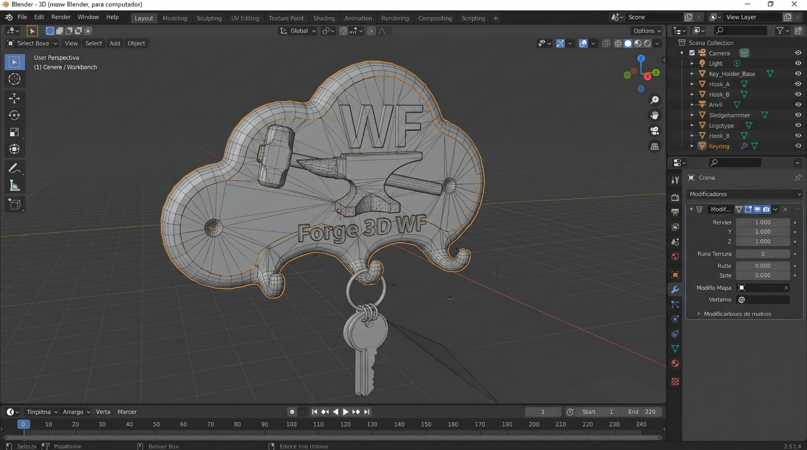
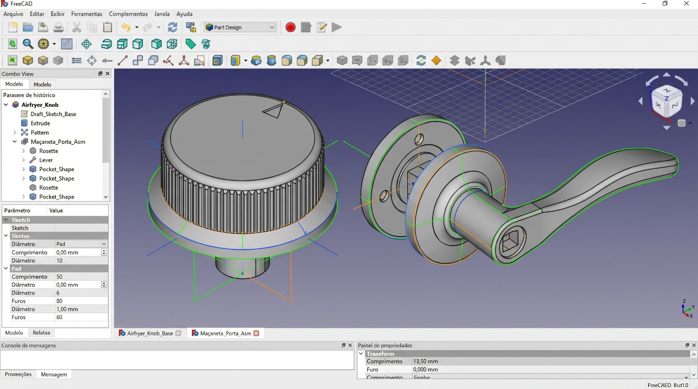

PROJETO · MODELAGEM 3D · FABRICAÇÃO
Da sua ideia
à peça pronta.
Desenvolvemos peças sob medida, componentes funcionais e soluções personalizadas. Você apresenta a necessidade; nós projetamos, modelamos e fabricamos a peça para a aplicação desejada.
ENGENHARIA E CRIATIVIDADE
Não encontrou a peça?
Nós podemos criar.
Nossa equipe tem certificação em Blender e FreeCAD e utiliza essas ferramentas para desenvolver desde formas orgânicas e personalizadas até componentes técnicos com medidas e encaixes definidos.
Podemos partir de uma peça quebrada, um desenho, medidas, fotografias ou simplesmente da sua ideia. Avaliamos a aplicação e desenvolvemos o modelo para fabricação.


MATERIAL PARA PEÇAS FUNCIONAIS
Mais resistência
para o uso diário.
Para projetos que exigem mais robustez, podemos fabricar em PETG, um material com boa resistência mecânica e ao impacto, indicado para diversas peças funcionais e componentes de uso cotidiano.
Conforme o projeto, podemos produzir suportes, adaptadores, manípulos, organizadores, carcaças, presilhas, protótipos e peças de reposição. A escolha do material e os limites de uso são avaliados de acordo com a aplicação.
Tem uma peça em mente?
Envie fotos, medidas ou um desenho. Vamos estudar a melhor solução para transformar sua necessidade em um projeto 3D.
Solicitar avaliação do projeto ↗